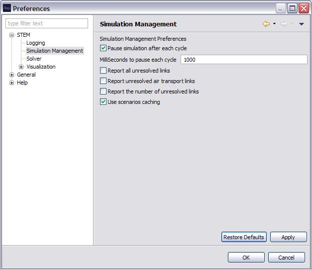

Simulation Management
The Simulation Management preference page allows control
over the execution of Simulations and the reporting of warning messages
generated when a Simulation is created from a Scenario.
- "Pause simulation after each cycle" If this box is
checked, the Simulation will pause execution for the number of seconds
specified in the box below it. This is useful to match the speed of
execution of the machine running the Simulation with its visualization.
This preference provides the option to give visualizations more time to
render, this can be useful for the
Google Earth view, for instance.
(Default: True, 2 Seconds)
- "Report all unresolved links" If this box is checked,
then any Edges or Labels that specify a Node in a graph that can not be
"resolved" (i.e., the Node cannot be found) will be reported with an
informational message. It is useful to have the option to suppress
these messages as many of the built-in Scenarios
have unresolved links. This is not an error, the unresolved links are
ignored and result from using Graphs that
provide general connectivity. For instance, between the Earth (ZZZ) and
all of the possible countries in the world. Not all Scenarios
will involve every country some links are unresolved.
(Default: False)
- "Report unresolved air transport links" If this box
is checked then unresolved links from air transportation will be
showed.(Default: False)
- "Report the number of unresolved links" If this box
is checked then the number of links that cannot be resolved will be
reported as an informational message.(Default: False)
- "User scenario caching"If this box is checked scenarios
will be cached in memory allowing them to start up more quickly. (Default: False, unchecked)
